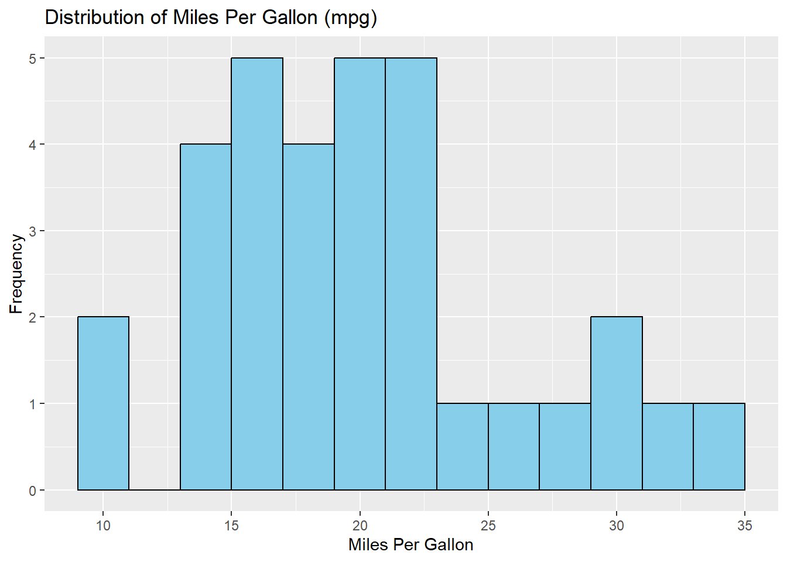
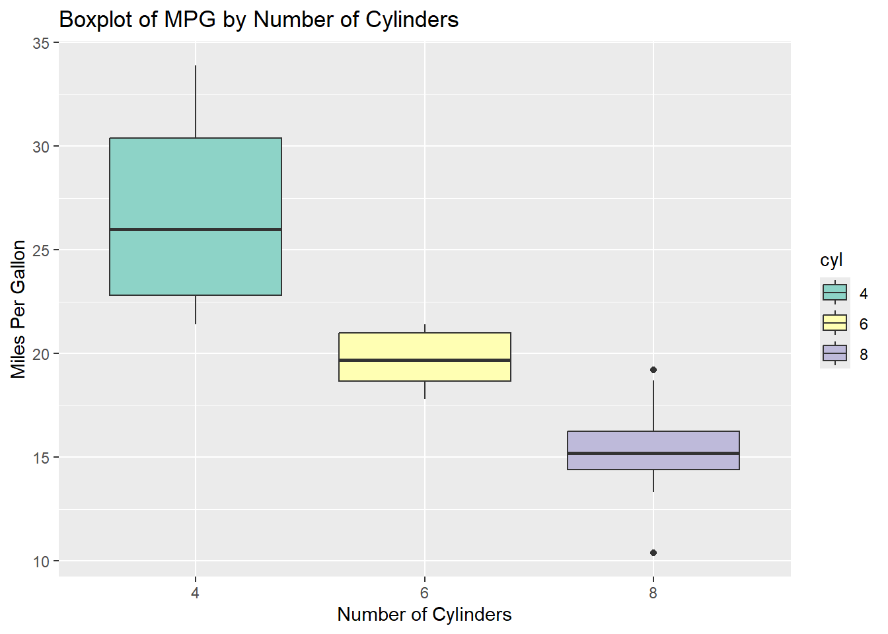
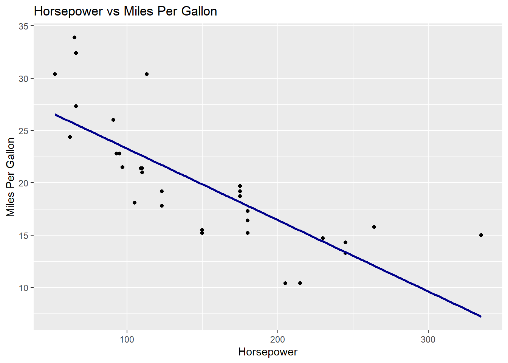
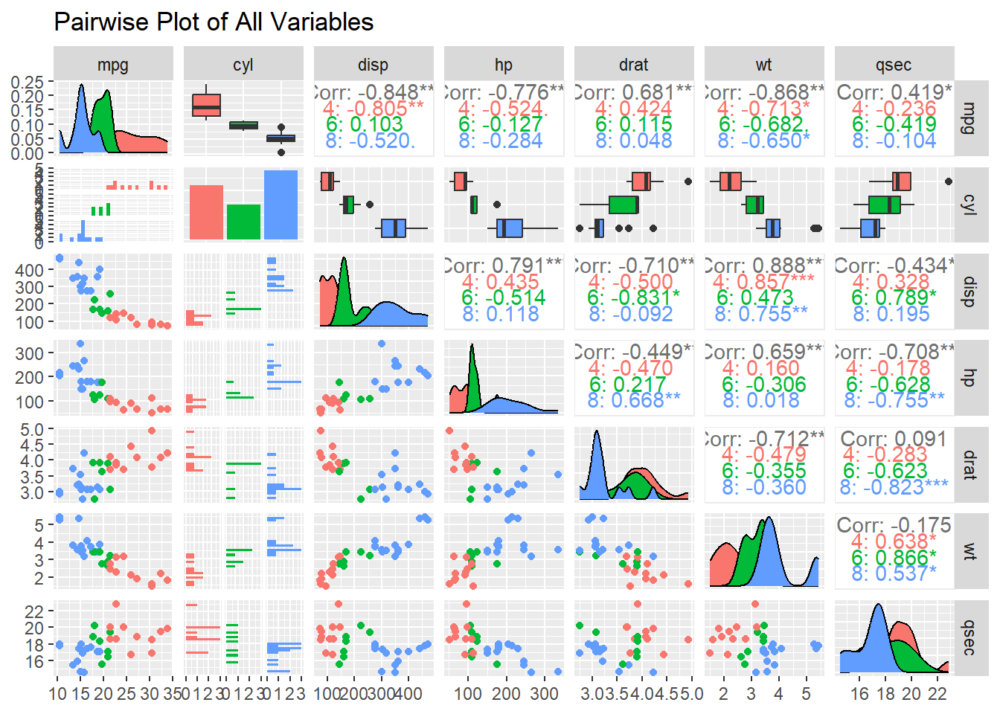
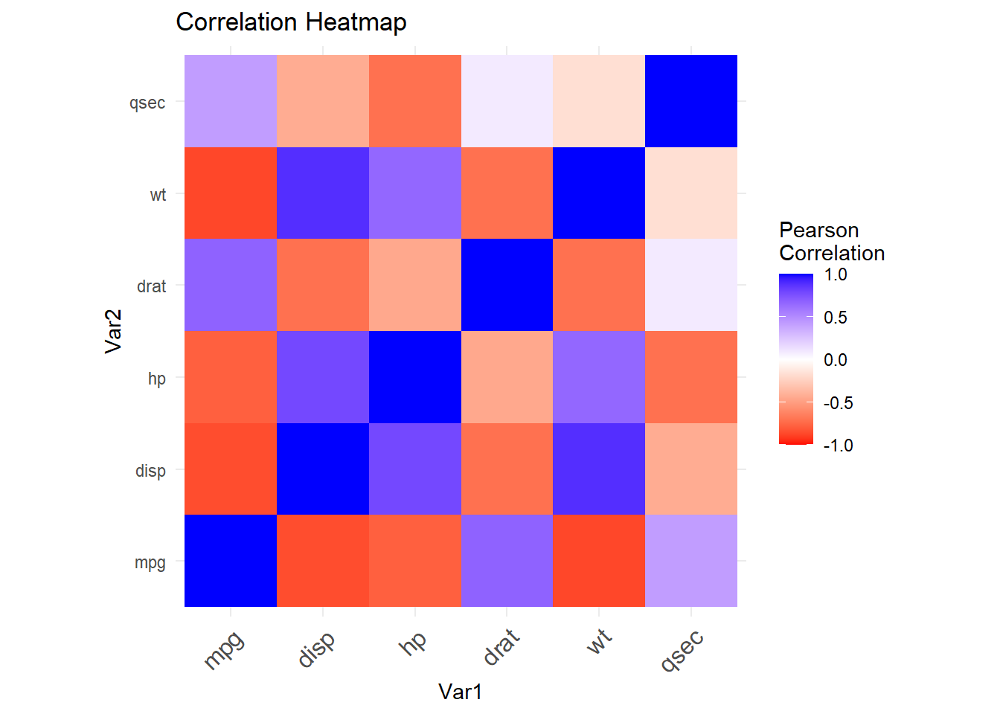

The mtcars dataset is a well-known dataset in R that contains data extracted from the 1974 Motor Trend US magazine. The dataset comprises various automobile design and performance aspects for 32 cars, including miles per gallon, number of cylinders, horsepower, weight, and more. In this report, we will perform data cleaning and exploratory data analysis (EDA) to uncover the underlying patterns in the data.
1.1 Load the mtcars dataset and Inspect the first few rows of the dataset
mpg cyl disp hp
Min. :10.40 Min. :4.000 Min. : 71.1 Min. : 52.0
1st Qu.:15.43 1st Qu.:4.000 1st Qu.:120.8 1st Qu.: 96.5
Median :19.20 Median :6.000 Median :196.3 Median :123.0
Mean :20.09 Mean :6.188 Mean :230.7 Mean :146.7
3rd Qu.:22.80 3rd Qu.:8.000 3rd Qu.:326.0 3rd Qu.:180.0
Max. :33.90 Max. :8.000 Max. :472.0 Max. :335.0
drat wt qsec vs
Min. :2.760 Min. :1.513 Min. :14.50 Min. :0.0000
1st Qu.:3.080 1st Qu.:2.581 1st Qu.:16.89 1st Qu.:0.0000
Median :3.695 Median :3.325 Median :17.71 Median :0.0000
Mean :3.597 Mean :3.217 Mean :17.85 Mean :0.4375
3rd Qu.:3.920 3rd Qu.:3.610 3rd Qu.:18.90 3rd Qu.:1.0000
Max. :4.930 Max. :5.424 Max. :22.90 Max. :1.0000
am gear carb
Min. :0.0000 Min. :3.000 Min. :1.000
1st Qu.:0.0000 1st Qu.:3.000 1st Qu.:2.000
Median :0.0000 Median :4.000 Median :2.000
Mean :0.4062 Mean :3.688 Mean :2.812
3rd Qu.:1.0000 3rd Qu.:4.000 3rd Qu.:4.000
Max. :1.0000 Max. :5.000 Max. :8.000
2 Pre-processing
2.1 Check for missing values in the dataset
missing_values <-sum(is.na(mtcars))if (missing_values ==0) {print("There are no missing values in the dataset.")} else {print(paste("There are", missing_values, "missing values in the dataset."))}
ggplot(mtcars, aes(x = mpg)) +geom_histogram(binwidth =2, fill ="skyblue", color ="black") +labs(title ="Distribution of Miles Per Gallon (mpg)", x ="Miles Per Gallon", y ="Frequency")

Figure 1: Histogram showing the distribution of miles per gallon (mpg) across the cars.
3.2 Boxplot of MPG by Number of Cylinders
ggplot(mtcars, aes(x = cyl, y = mpg, fill = cyl)) +geom_boxplot() +scale_fill_brewer(palette ="Set3") +labs(title ="Boxplot of MPG by Number of Cylinders", x ="Number of Cylinders", y ="Miles Per Gallon")

Figure 2: Boxplot depicting the variation in miles per gallon (mpg) and cylinders.
3.3 Scatter Plot of Horsepower vs. Miles Per Gallon
ggplot(mtcars, aes(x = hp, y = mpg)) +geom_point() +geom_smooth(method ="lm", color ="darkblue", se =FALSE) +labs(title ="Horsepower vs Miles Per Gallon", x ="Horsepower", y ="Miles Per Gallon")

Figure 3: Scatter plot showing the relationship between horsepower and miles per gallon (mpg).
3.4 Pairwise Plot of All Variables
ggpairs(mtcars, columns =1:7, ggplot2::aes(color = cyl)) +labs(title ="Pairwise Plot of All Variables")

Figure 4: Pairwise plot illustrating the relationships between all numeric variables.
3.5 Correlation Heatmap
# Select numeric columnsmtcars_numeric <- mtcars %>%select_if(is.numeric)# Calculate correlation matrixcor_matrix <-round(cor(mtcars_numeric), 2)# Reshape the correlation matrix for plottingcor_melted <-melt(cor_matrix)# Plot the correlation heatmapggplot(cor_melted, aes(Var1, Var2, fill = value)) +geom_tile() +scale_fill_gradient2(low ="red", high ="blue", mid ="white", midpoint =0, limit =c(-1, 1), space ="Lab", name ="Pearson\nCorrelation") +theme_minimal() +theme(axis.text.x =element_text(angle =45, vjust =1, size =12, hjust =1)) +coord_fixed() +labs(title ="Correlation Heatmap")

Figure 5: Heatmap showing the Pearson correlation coefficients.